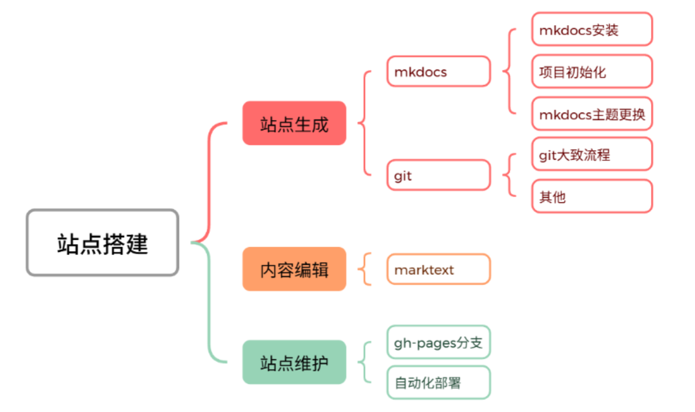
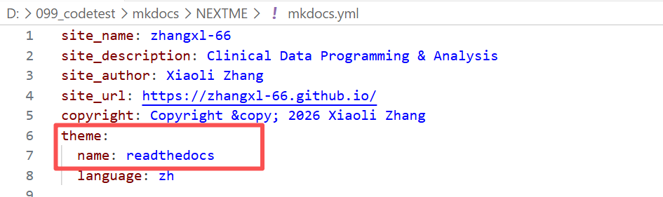

github.io 站点搭建
-
文档说明： 利用 MkDocs + GIthub 创建个人博客/网站
-
文档结构：

MkDocs
静态站点生成器，相关详细介绍参见 mkdocs.org
MkDocs的安装+初始化项目
-
直接利用python环境安装
-
安装相关主题
-
创建文件夹，进入终端，初始化生成项目
-
进入项目文件夹，启动本地服务器预览
pip install mkdocs
pip install mkdocs-material
mkdocs new "项目名字"
mkdocs serve
MkDocs主题更换
-
vscode 打开项目文件夹， 编辑 mkdocs.yml 文件，更换主题保存， 终端中再次 mkdocs serve 预览
-
其他主题资源，deepseek

Git
Git大致流程
-
初始化本地仓库
-
添加文件到暂存区
-
提交到本地仓库
-
关联远程仓库
-
推送到远程仓库
cd /path/to/your/folder
git init
git add .
git commit -m "初始化项目"
git remote add origin https://github.com/yourname/repo.git
git push -u origin main
Git其他
- 查看当前状态
git status
- 忽略文件
.gitignore
- 拉取
git pull
- 强制推送
git push --force
站点维护
方案一：使用 gh-pages 分支（推荐，最简单）
原理：mkdocs gh-deploy 会自动构建网站，并把生成的 HTML 文件推送到 gh-pages 分支。GitHub Pages 从 gh-pages 分支读取文件就能正确展示。
- 在本地项目目录执行部署命令
mkdocs gh-deploy
-
修改GitHub Pages设置
-
回到仓库的
Settings→Pages -
将 Branch 从
main改为gh-pages -
文件夹保持
/ (root) -
点击 Save
-
等待 1-2 分钟，访问
https://XXXX.github.io/就能看到了
方案二：使用 GitHub Actions 自动部署（更自动化）
（Deepseek提供，未测试）
如果你想保留 main 分支作为 Pages 源，可以用 Actions 自动构建。
- 在项目根目录创建
.github/workflows/deploy.yml：
yaml
name: Deploy MkDocs to GitHub Pages
on:
push:
branches: [main]
permissions:
contents: write
jobs:
deploy:
runs-on: ubuntu-latest
steps:
- uses: actions/checkout@v4
- name: Set up Python
uses: actions/setup-python@v5
with:
python-version: '3.x'
- name: Install MkDocs
run: pip install mkdocs
- name: Deploy
run: mkdocs gh-deploy --force
- 提交并推送：
bash
git add .github/workflows/deploy.yml
git commit -m "Add GitHub Actions workflow"
git push origin main
- 确保 Pages 设置是：
Source: Deploy from a branch
Branch: gh-pages / / (root)
（因为 Actions 还是会推送到 gh-pages 分支）